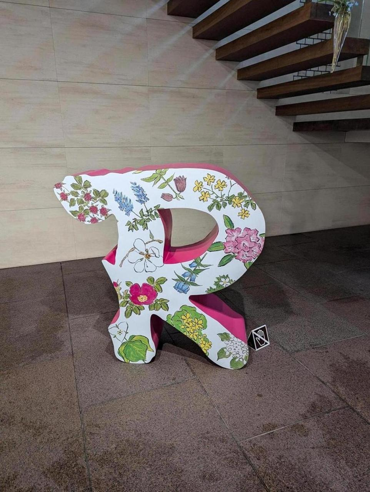
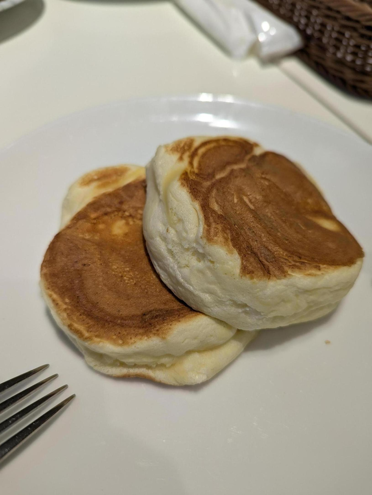
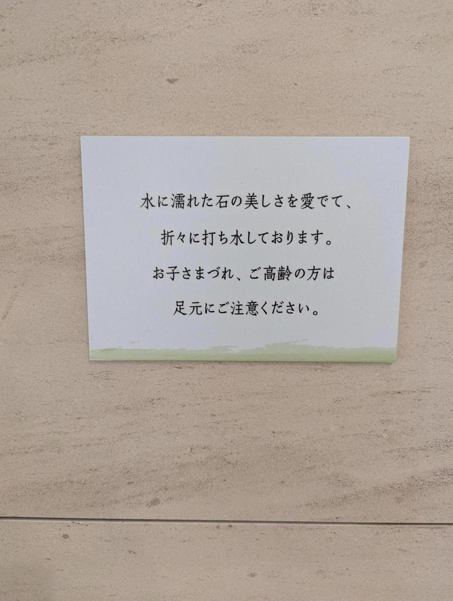
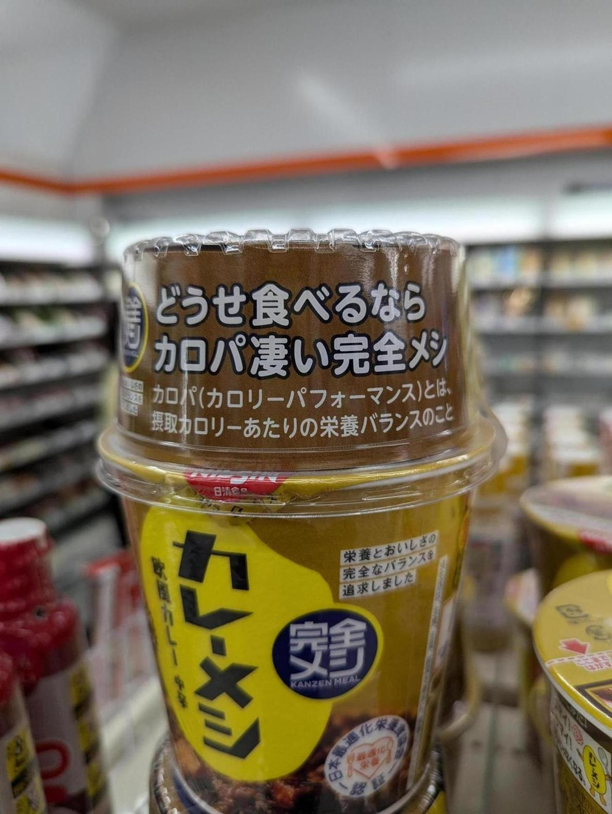

昨日に引き続き北海道にいる。帯広に来た。ここは六花亭の帯広本店。

帯広本店と、函館の漁火通店限定のパンケーキ。柔らかさが絶妙で美味しい。 帯広と函館でしか食べられないというのは、なかなかうまいなと思う。札幌で食べられたら、プレミア感がないもんな。
帯広のローカルさは、函館と同じくらいだろうか。中心部は碁盤の目になっており、札幌と似たような西◯北◯のような呼び方で通りが特定できる。これはシステマチックで、住所を言えばそこまでの道順とかかる時間が大体わかるので良い。

六花亭の店の床がなぜか濡れていたんだが、打ち水をしていたようで、このような注意書きがあった。品が良い気もするけど、よく読むとなぜ水をまくのかは書かれてない。

セイコーマートに寄ったらカレーメシのカロパという言葉を発見。
都知事選は、予想していたけど小池百合子さんが選出されたようだ。私は東京都民でないので投票してないが、もし投票権があったら別の人に入れたと思う。変わらないより変わるほうが良いと思っているし、若い人にやってほしいから。小池百合子さんが明確に都知事をやらないでほしい理由があるわけではないが。